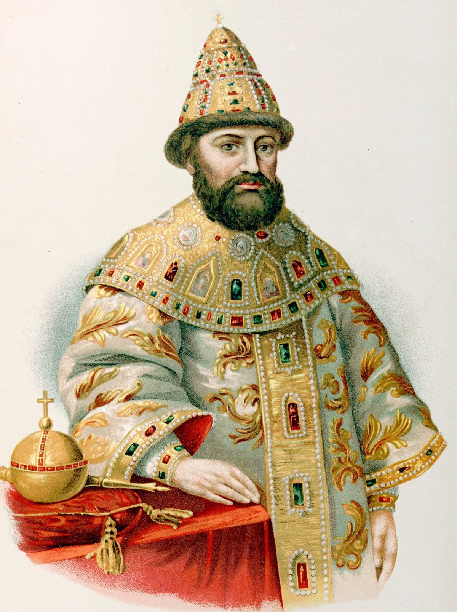
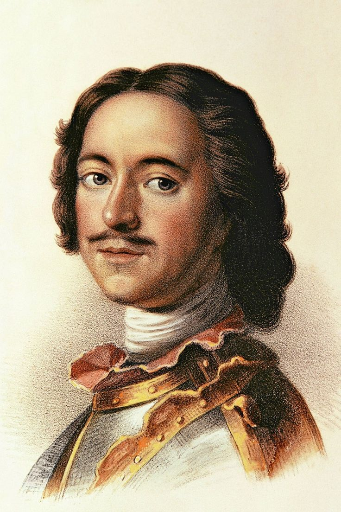
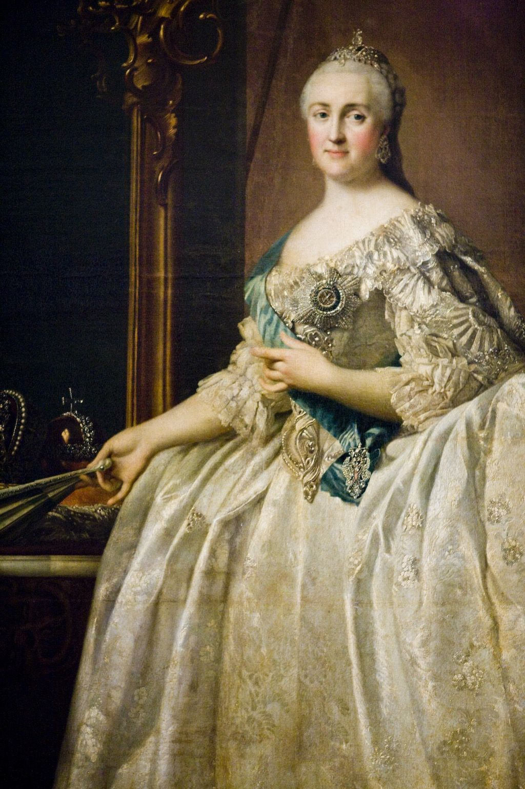

1613–1645Михаил Фёдорович
Первый царь из династии Романовых. Завершил Смутное время.
1613 – 1917
В 1613 году Земский собор избрал на царство Михаила Фёдоровича Романова. Так началась династия, правившая Россией 304 года.
Последним императором стал Николай II, отрёкшийся от престола в 1917 году.
Читать подробнее →
1613–1645Первый царь из династии Романовых. Завершил Смутное время.

1682–1725Первый император России. Основал Санкт-Петербург, создал флот и регулярную армию.

1762–1796Эпоха просвещённого абсолютизма, расширение границ империи.